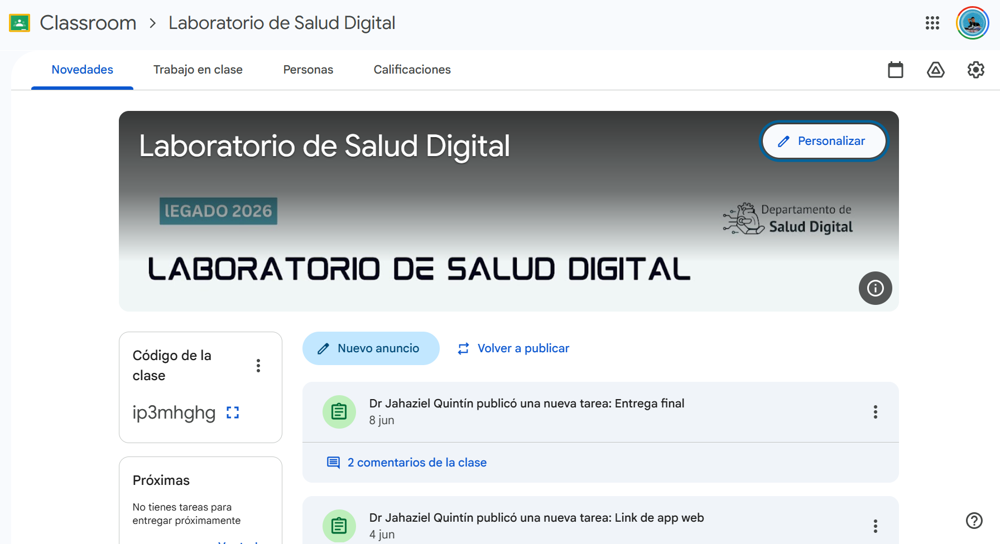

← Actividades académicas · Expediente 05/07
Laboratorio de Salud Digital
Taller de innovación en el que los participantes diseñan soluciones digitales de salud vinculadas al ODS 3, desde la fundamentación hasta un MVP mejorado con IA.
- Tipo
- Taller de innovación
- Plataforma
- Google Classroom
- Año
- 2026
Implementación
El taller se gestionó en un aula virtual de Google Classroom, con entregas por fases hasta la presentación final de los proyectos.

Recursos educativos

Material del taller: